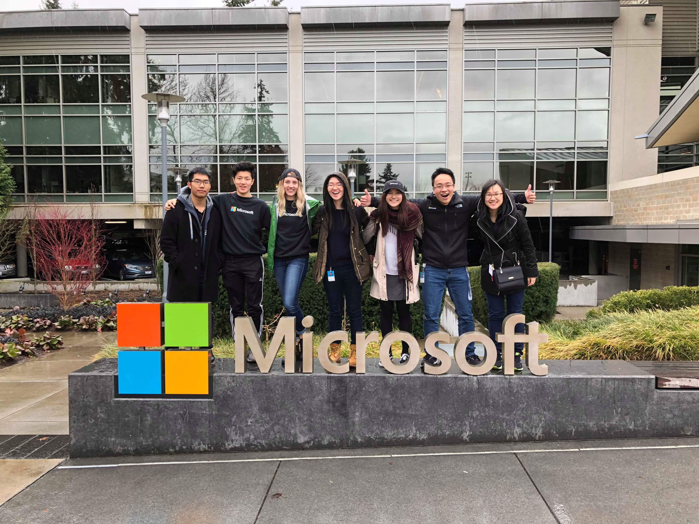
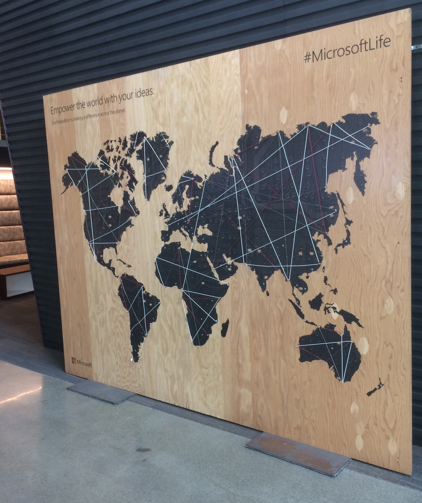
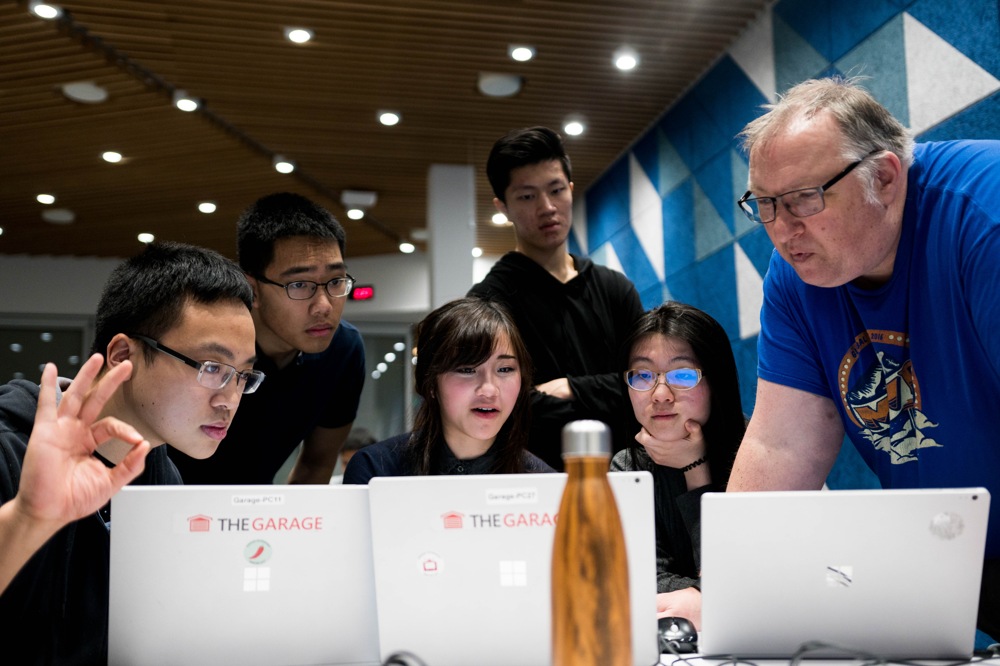
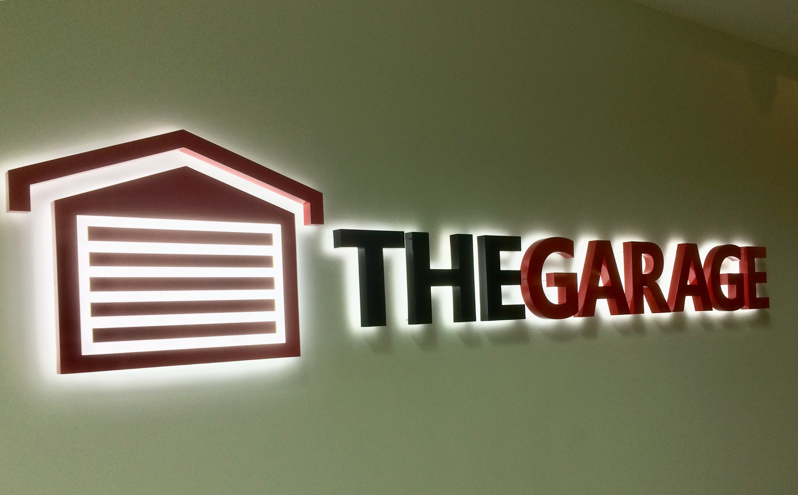
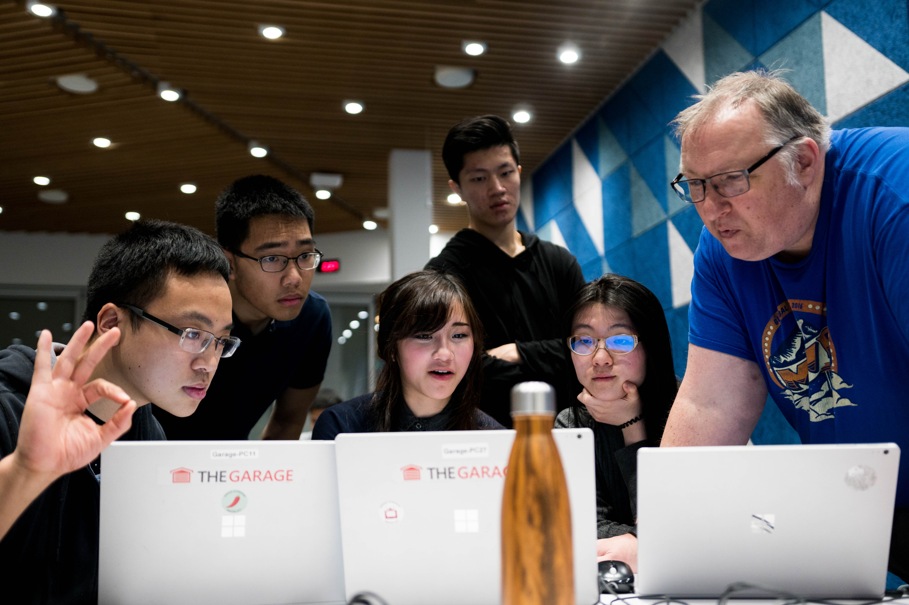
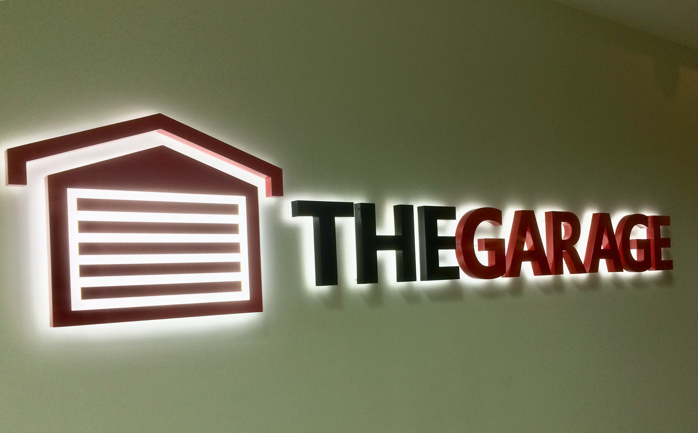
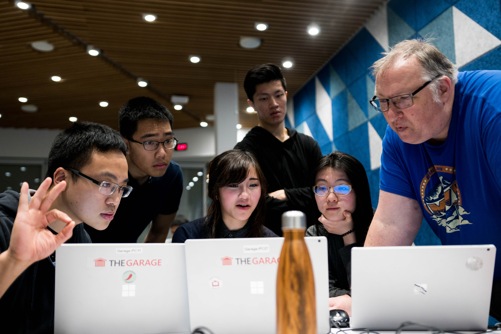
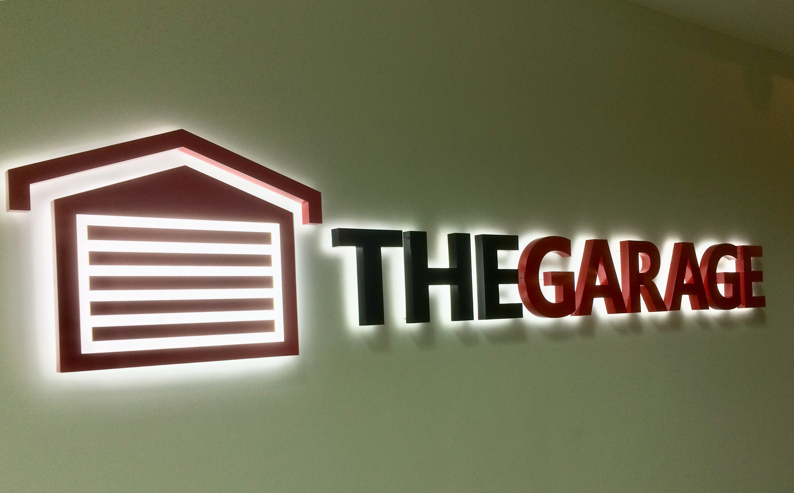

.JPG) 



I'm humbled to have had this amazing opportunity to work with one of the leading companies in the tech field - Microsoft.
The 4 month Garage internship was a high-paced program with a greatly unique experience of both a start-up and large company experience. In the Spring 2018 term, my team and I learned a great amount soft, technical, and design skills.
From countless presentations, live demos, and coffee 1:1's with Microsoft industry professionals, we've learned to push our careers forward through learning to be clear and concise with our ideas. Making features for the product is might as well be dependant on being able to communicate and prove why the features and product itself will be useful.
On the technical side, we've learned about advanced subjects such as architecture, graphics optimizations, and the Azure cloud storage. There were more times than not that there were tasks that at first I didn’t know how to do. A new features brought fresh new technical issues and mysteries to uncover with the HoloLens, but each were overcome with systematic, strategic attacks at cracking the problem.
On a last note, I wanted to say that after working with Microsoft, I learned what design really was. We build things for people and ourselves that must be scalable, bug-free, and ultimately useful. From working side-by-side with a UX designer, I can say that one of the biggest highlights of the internship was to finally hear a phrase like ‘I would love this in my office’ after countless hours of tinkering and tweaking. This to me is the essence of why we build: to innovate, to inspire, and to empower.

